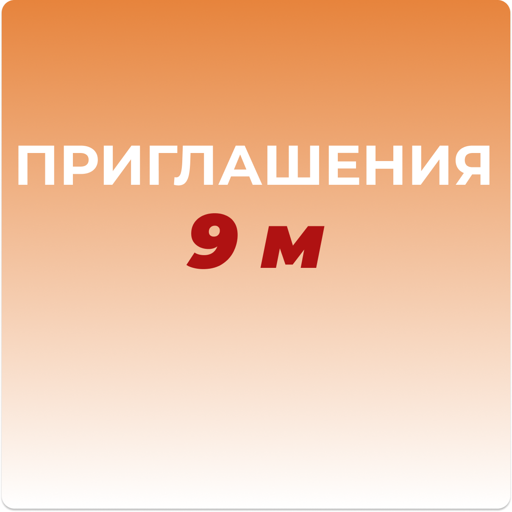
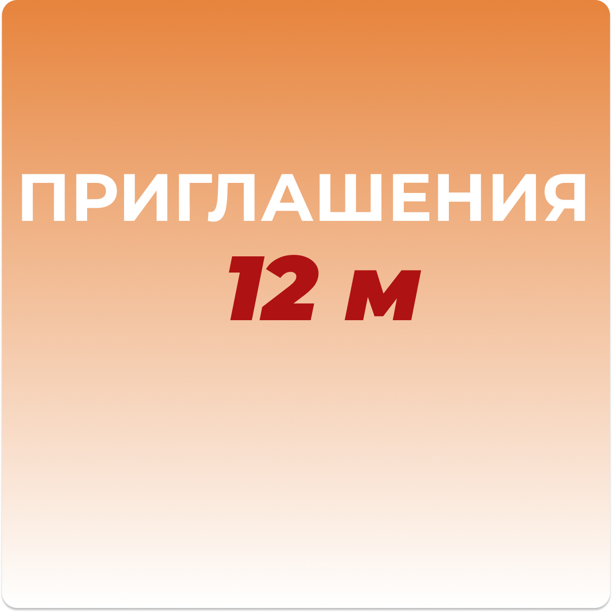

Виды рабочих приглашений в Польшу:
В зависимости от вида работ, приглашение на работу в Польшу, может быть выдано работодателем сроком на:
-
6 месяцев (полугодовое);
- 180/180 дней
-
9 месяцев (сезонное);
- 270/270 дней
-
12 месяцев (воеводское).
- 365/365 дней
Как вы понимаете, полугодовое рабочее приглашение – основание для открытия польской визы на 6 месяцев. Если вам нужны сроки побольше, стоит рассмотреть вариант с сезонной или годовой визой. Тем более что с ними у вас будет больше пространства для маневра в дальнейшем: вам не придется ждать долгих коридоров после окончания. Подробности мы ранее описали в статье «Коридор после польской визы и безвиза».
Образец полугодового приглашения на работу в Польшу:
Сезонное приглашение в Польшу выдается исключительно для работы в сельскохозяйственной и отельно-ресторанной сфере. В польском законодательстве существует строгий список сезонных работ. Если проверка выявит нарушение, вам грозит депортация с последующим запретом въезда на территорию Шенгенской зоны.
Важно! Приглашение на сезонные работы поможет не ждать «коридора» после полугодовой визы. Также обратите внимание, что открывается сезонная виза только до конца текущего года. Подробную информацию о данном типе визы вы найдете в нашей статье «Сезонная виза в Польшу».
Образец сезонного приглашения в Польшу:
Третий вид приглашений – это воеводское приглашение, выданное сроком на 12 месяцев. Годовое рабочее приглашение в Польшу, так называемое «Zezwolenie», имеет ряд преимуществ. Открытая на его основании годовая польская виза обеспечивает:
- Легальное пребывание в Польше 360 дней;
- Многоразовый въезд/выезд с территории Польши;
- Подачу на визу без ожидания «коридоров».
Образец воеводское приглашение в Польшу:
Приглашение без привязки
Если у вас на примете уже есть место для работы, въехать на территорию Польши поможет рабочее приглашение без привязки к работодателю. С ним вы также можете выехать за пределы страны в любую из стран Шенгена по своим личным делам. Документ позволяет легально там находиться, но не дает права официально работать. Более подробную информацию по данному виду приглашения вы можете получить у наших консультантов.
Сроки изготовления приглашения в Польшу
Если вы закажете не срочное приглашение на 6 месяцев, оно будет готово, в среднем, за 10 -14 дней. Приглашения на работу на 9 месяцев (не срочное) стоит ждать через 3-4 недели, а изготовление приглашения на 12 месяцев (не срочное) может затянуться до 45 дней. Выбрав срочное приглашение в Польшу, вы сократите срок ожидания минимум вдвое.
Вся изложенная выше информация подходит скорее для тех, кто повторно собирается ехать на работу в Польшу или страны Шенгенского договора. Новичкам же советуем обращаться к профессионалам. Наши менеджеры предоставят подробную консультацию и помогут в заполнении визовой анкеты, оформлении страхового полиса и оплаты визового сбора.
Мы также помогаем своим клиентам записаться в польский визовый центр на подачу документов без присутствия, например, если вы находитесь за границей. Подробнее об этом читайте в нашей статье
Срочная запись в визовый центр Польши без личного присутствия.